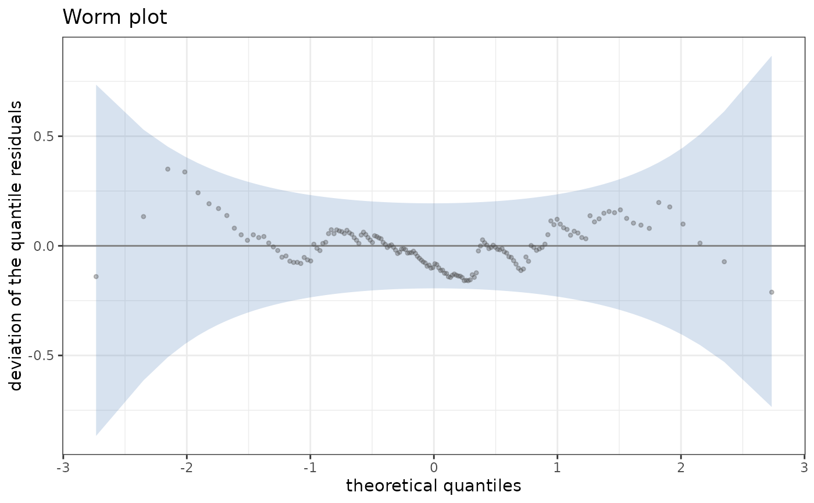
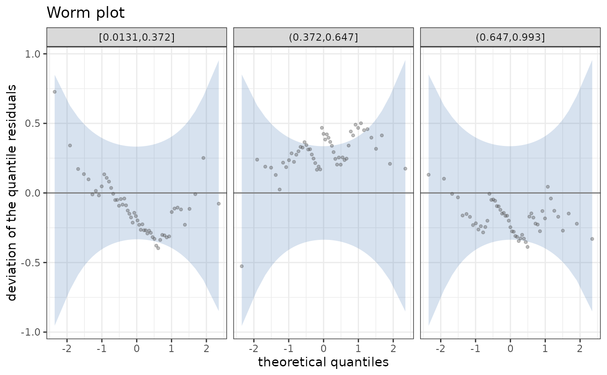

Selects the detrended quantile-quantile graph of the quantile residuals: the
difference between each sorted residual and its theoretical quantile,
against the theoretical quantile, with the band of plot_qq() detrended
in the same way. With over, the observations are divided into classes of a
covariate and one worm is drawn for each class.
Arguments
- over
The name of a covariate, or
NULL.- n_inter
The number of classes of a numeric covariate.
- band, level, n_sim, seed
See
plot_qq().
Value
A PlotWorm object, inheriting from diagnostic_plot.
Details
A worm plot (van Buuren and Fredriks, 2001) turns the departures from the
line of the quantile-quantile graph into departures from the horizontal
axis. An intercept different from zero shows a wrong mean of the residuals,
a slope a wrong variance, a U shape a wrong skewness and an S shape a wrong
kurtosis. With over a numeric covariate is divided into n_inter classes
of equal count (a factor into its levels), which requires data in
autoplot.StatmodFit(). The band is that of plot_qq() computed within
each class.
References
van Buuren, S. and Fredriks, M. (2001). Worm plot: a simple diagnostic device for modelling growth reference curves. Statistics in Medicine 20(8), 1259–1277.
Examples
set.seed(1)
dd <- data.frame(x = runif(160))
dd$y <- 1 + dd$x + rnorm(160, sd = 0.4)
fit <- statmod(y ~ x, distributions7::gaussian1_distrib(), dd)
ggplot2::autoplot(fit, plot_type = plot_worm())

ggplot2::autoplot(fit, plot_type = plot_worm(over = "x", n_inter = 3), data = dd)
